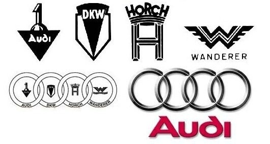

About Audi
Audi is a prestigious German automobile manufacturer known for producing high-performance, luxury vehicles. It was founded by August Horch in 1909 and is now part of the Volkswagen Group. The name "Audi" is derived from the Latin translation of "Horch", meaning "listen".
Audi’s four-ring logo represents the merger of four car companies: Audi, DKW, Horch, and Wanderer — the founding members of Auto Union in 1932. The brand is renowned for its engineering innovations, including its world-famous quattro all-wheel-drive system.
